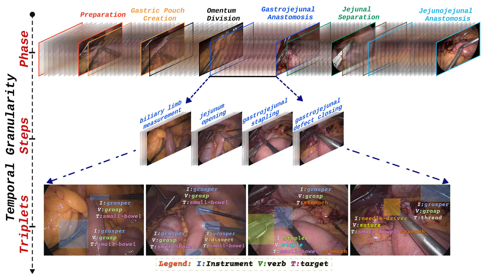
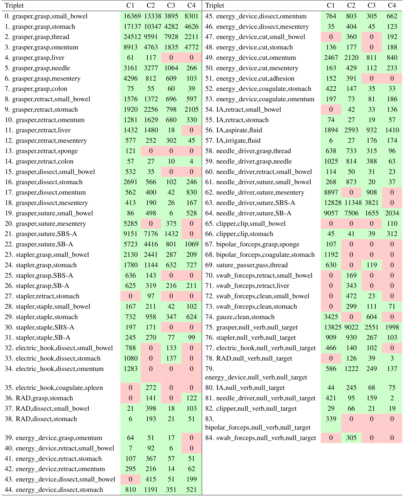
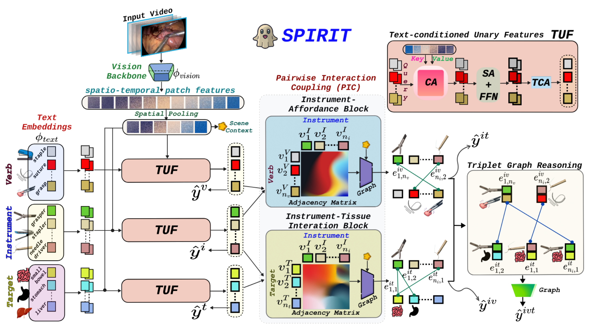
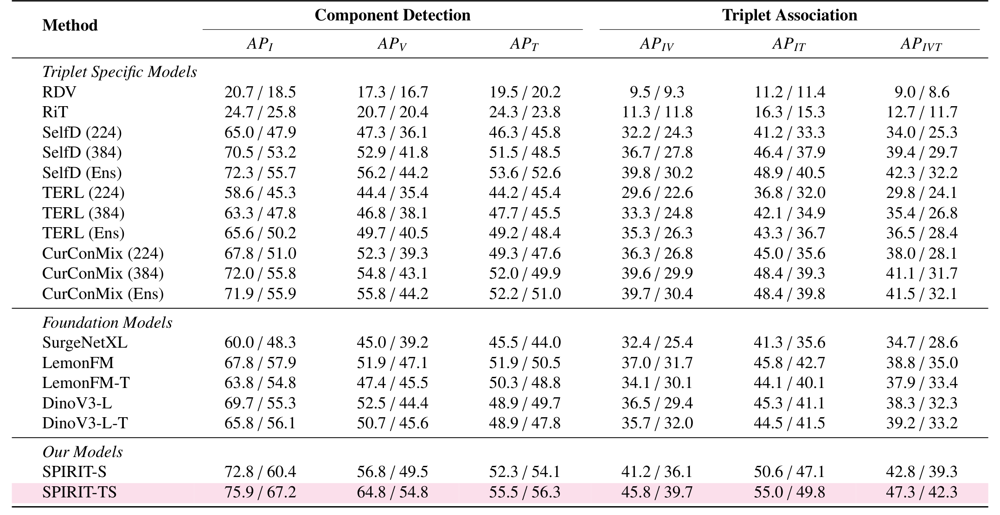
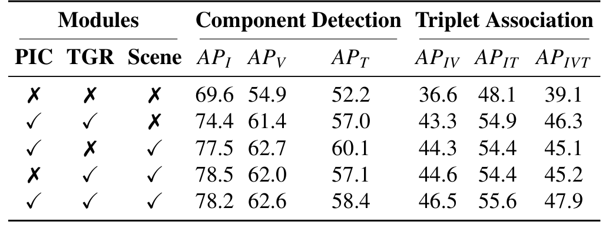
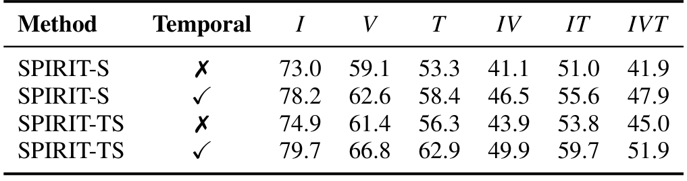

图文解读
1背景与动机
手术动作三元组要求模型说出哪件器械、在做什么、作用在哪个组织上，比阶段和步骤细得多。安全监测、不良事件分析和技能评估都需要这个粒度。
问题是没人知道三元组模型换一家医院还能不能用。 不同医院的成像设备、镜头操作、术者习惯和器械偏好都不一样。已有工作证明阶段识别跨中心会掉点；三元组要区分更细的交互，作者预期掉得更多。
现有三元组数据集测不了这件事：CholecT50 是单中心胆囊切除，ProstaTD 没有设计跨中心评测。胃旁路手术时间长、动作相似，又是一个更难的场景。
2核心观点速览
- 数据：四家中心共 40 段视频，1 fps 下 420,911 个实例，85 类三元组，同时带阶段和步骤。
- 标签按时间区间标：以动作顶点为中心，前后约 3 秒。
- 挑战赛划分只用 C1、C2 训练，隐藏测试含两家完全没见过的医院。
- 跨中心掉点主要落在关系上：器械识别还能维持，三元组分数掉一半。
- 边界：每个未见中心只有 5 段测试视频，中心间类别构成不同，数据获取方式论文未说明。
先看数据怎么建。
3数据：四家医院、一套协议

四家中心是斯特拉斯堡（C1）、伯尔尼（C2）、巴塞尔（C3）、苏黎世（C4）。视频统一为 25 fps、480p。C2 的视频已经包含在公开的 MultiBypass140 里。每个中心的视频总数论文未说明。
标注时先找器械与组织接触最清楚的顶点，再前后各延约 3 秒，并根据器械是否可见、相邻动作是否开始调整边界。两名医学生和两名住院医标注，专家仲裁；标注一致性论文未说明，所以无法估计标签噪声的上限。
原始 212 个候选三元组，删掉中心特有的、出现不到 10 次的和总在背景里静止的，再经两名专家判断临床相关性，最终保留 85 类。
标签确定后，下一步是划分。
4三种划分各测什么
| 划分 | 训练 | 验证 | 测试 | 隐藏测试 |
|---|---|---|---|---|
| all-centers | 22 | 8 | 10 | |
| 交叉验证每折 | 24 | 6 | 10 | |
| challenge | 14 | 2 | 9 | 15 |
（单位为视频段数。）
all-centers 和交叉验证混合四个中心，比较的是方法本身。只有挑战赛划分能测未见中心：C3、C4 只出现在隐藏测试里。

这张表很关键：很多类在某个中心是 0。例如持针器缝合胃小肠吻合口在 C4 完全没有。这会影响后面跨中心结果的解读。
5SPIRIT 怎么建模关系

SPIRIT 把三元组分三层学：
- 单项：用类名的文本嵌入作查询，去读 8 帧片段的时空特征，得到器械、动作、目标三组节点。
- 成对：在“器械与目标”“器械与动作”两张二部图上各做一层图注意力，得到两张关系矩阵。
- 组合：把每条关系边当成节点，只在本体允许的 85 种组合之间连边，再分类三元组。
之后把第一阶段模型冻结当教师做蒸馏，教师和真值越不一致，样本权重越低。主干是 dino.txt（DINOv3 ViT-L/16 加文本塔）。
方法交代完，看结果。
6结果：基准把方法拉开了多少
| 方法 | 交叉验证 | all-centers | 公开 / 隐藏测试 |
|---|---|---|---|
| RDV | 21.4 | 21.6 | 9.0 / 8.6 |
| SelfD (Ens) | 44.1 | 43.0 | 42.3 / 32.2 |
| LemonFM | 41.5 | 39.7 | 38.8 / 35.0 |
| DinoV3-L | 43.0 | 42.5 | 38.3 / 32.3 |
| SPIRIT-TS | 51.5 | 51.9 | 47.3 / 42.3 |
（三元组 AP。）

所有方法从公开测试到隐藏测试都掉点，SelfD 集成版掉了 10.1，SPIRIT-TS 掉 5.0。另一个现象是主干加时序不一定有用：all-centers 上 DinoV3-L-T 比单帧版本低 1.1。
7按中心看：难在关系
| 方法 | C1 器械 / 三元组 | C4 器械 / 三元组 |
|---|---|---|
| SelfD (Ens) | 68.9 / 42.1 | 50.3 / 21.2 |
| LemonFM | 68.2 / 40.2 | 54.9 / 27.2 |
| SPIRIT-TS | 74.0 / 46.7 | 72.3 / 36.4 |
SPIRIT-TS 在 C4 上的器械分数几乎回到 C1 水平，三元组却只有 36.4。认出器械之后，组合关系依然是主要难点。
8消融说明了什么

加入关系结构让三元组分数从 39.1 升到 46.3。去掉 PIC 或 TGR 中任意一个，分数都在 45 左右，两者分工更多是作者的解释。

没有时序时，SPIRIT-S 的 41.9 低于单帧 DinoV3-L 的 42.5。 关系模块要靠时序特征才有效，这和按时间区间标注的方式一致。
9深入分析：掉点来自哪里
作者把未见中心的掉点归因为关系泛化。我的判断：还有一个没被排除的解释，即中心间类别构成不同。按视频计算的 mAP 只对测试视频中出现的类别取平均，C4 缺少训练中很常见的缝合类，分数自然会变。论文没有在类别对齐的子集上比较，两种解释没有分开。
方法收益也有三个来源混在一起：关系结构（消融支持）、时序（消融支持）、文本主干（论文未说明，没有消融）。基线沿用原作者超参数，SPIRIT 在本数据集上调参，比较不完全对等。
10结果没说什么
- 不能外推到更多国家或设备：四家中心都是法国和瑞士的大学医院。
- 不能说明标签可靠性：一致性论文未说明。
- 不能保证结果稳定：多随机种子论文未说明，显著性只在 9 段视频上做。
- 不能评估时间定位：标注有起止时间，评测仍是 1 fps 逐帧分类。
11复现要注意什么
数据获取方式论文未说明。 论文只写代码将公开于 GitHub；2026-11-08 访问该地址返回 404，Hugging Face 上也没有官方发布。在数据放出之前，本文数字无法复现。
计算成本：SPIRIT 每样本 487.47 GFLOPs、推理约 46.6 毫秒，是所有单模型里最慢的。用 MultiBypass140 预训练的模型在 C2 上有数据重叠风险。